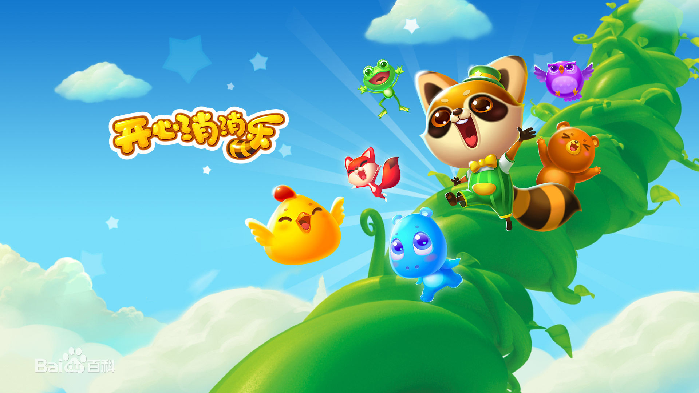
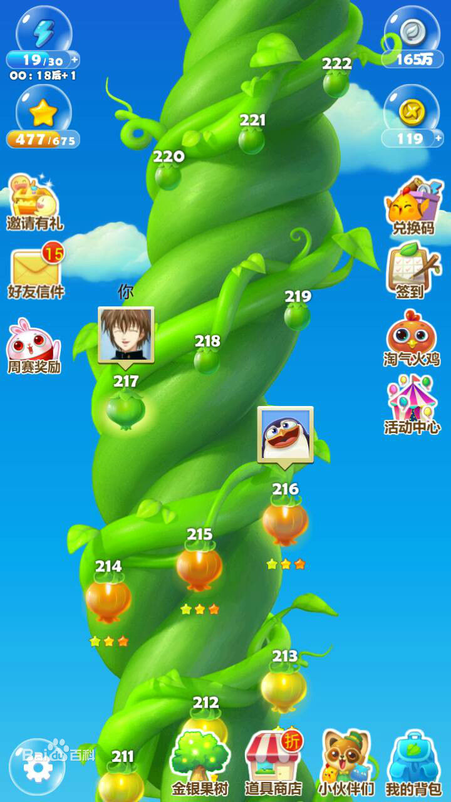
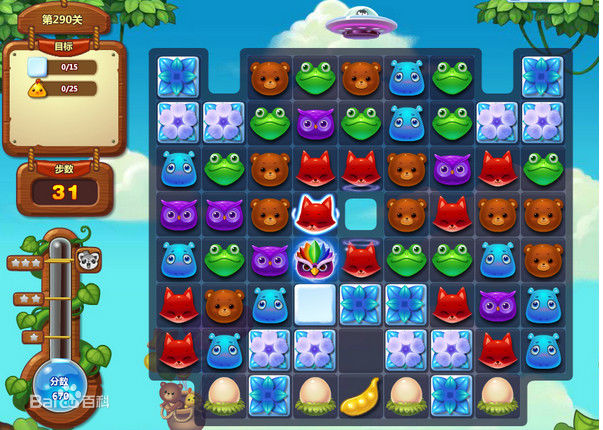
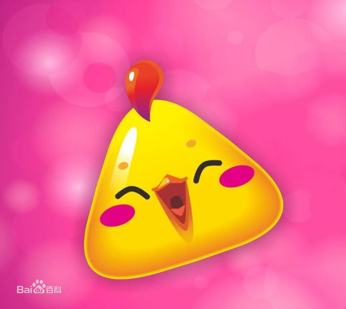

《开心消消乐》是一款乐元素研发的一款三消类休闲游戏。2013年8月，正式在网页版上线，在2014年8月推出了安卓版本和IOS版本。 游戏以救村长为目的，玩家开始了一段开心的闯关旅程。 在2015年《开心消消乐》荣获玩家最喜爱的移动单机游戏奖。
一天晚上，天空中掉下一颗神奇的豌豆种子，正好落在了梦之森林的村长屋附近，种子落地后 吸收了池塘的水分，迅速成长，一夜之间变成参天大藤蔓…… 第二天早上，村民们醒来后看到 巨大的藤蔓都惊呆了，聚在一起议论纷纷。有人说他似乎看到村长的房子在高耸入云的藤蔓 上，房子似乎还在上升，有人号召说应该爬上去救村长，玩家需要爬到藤曼顶部救出村长。
单位设定：动物 游戏中消除的对象为小动物的头像，包括小浣熊、小狐狸、小青蛙和小鸡等动物头像。 玩家通关移动动物头像位置凑够3个或3个以上即可消除。 （游戏中设置了体力上限30点，每次闯关需要消耗5点体力， 当体力不足5点，玩家不能进入关卡。每个关卡通过后， 玩家可以可以得到一定的星星数量，玩家获得3星可以返还5点精力， 获得2星可以返还2点精力，获得1星不返还精力。
障碍物: 游戏种的障碍有很多，分别是传送门、冰块、金豆荚、雪块等。
游戏规则：把三个颜色相同的小动物连成一条直线，即可消除。达到指定的目标通关后。 游戏的模板有四种分别是分数过关、指定消除、获得金豆荚、云朵关卡。
物品道具
游戏道具: 游戏中的道具分为三种 普通道具永久有效，限时道具再领取后24小时有效，超过24小时自动消失， 礼盒，前置道具，仅当局有效，关卡结束，如果没有使用自动消失。
消耗品: 游戏中的消耗品主要包括2种，分别是精力瓶和游戏货币。 精力瓶主要有3中分别是初级精力瓶、中级精力瓶和高级精力瓶3种，使用1个初级精力瓶可以恢复1点精力， 使用1个中级精力瓶可以恢复5点精力，使用1个高级精力瓶可以恢复30点精力。 当精力值为30时，不能使用精力瓶。游戏中的货币分为银币和风车币2种， 玩家可以通过闯关、每日签到、收获果实和商店购买获得银币，银币剋以用于闯关前购买道具和升级果树。 风车币可以通过商店充值购买，风车币可以用于购买游戏道具和解锁游戏区域。
